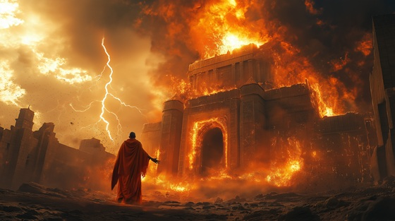

The Burning Palace marks the end of Shango’s mortal reign in many versions of the myth. Some say his enemies set the palace aflame in their betrayal. Others claim Shango himself set it ablaze, choosing destruction over defeat — and ascension over submission.
In either telling, the message is the same: the fall of Shango was no fall at all, but a purifying fire. The storm obeyed. The sky broke. The king was gone, but something greater had awakened.
This is the turning point from flesh to flame, where myth becomes godhood, and thunder finds its voice in eternity.
The Burning Palace
The torches turned before their time,
The walls breathed smoke, the bells maligned.
They came with gold, they came with lies—
But left with ash beneath the skies.
The crown still shone, the throne still stood—
But Shango laughed and split the wood.
Let the palace burn to dust,
Let thunder cleanse what broke his trust.
No king shall sit where fire feeds—
This crown was built on broken creeds.
The pillars cracked with roaring flame,
His staff struck stone and spoke his name.
He called the lightning down with breath—
And turned his throne into his death.
The gods looked on, the storm kneeled low—
To witness how a king lets go.
Let the palace burn to dust,
Let thunder cleanse what broke his trust.
No king shall sit where fire feeds—
This crown was built on broken creeds.
No sword was drawn, no war declared,
Just fire, storm, and men who stared.
They came for blood, they left in fear—
For gods do not just disappear.
The smoke rose high like wings of flame,
The man was gone, but not his name.
Let the palace burn to dust,
Let thunder cleanse what broke his trust.
No king shall sit where fire feeds—
This crown was built on broken creeds.
Ashes speak in sacred tones,
Flame remembers what the world disowns.
He burned his past to light his path—
A god reborn through mortal wrath.
He did not fall…
He rose in fire.